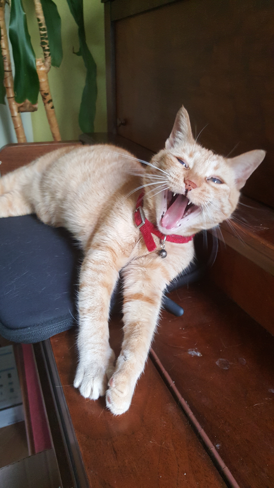
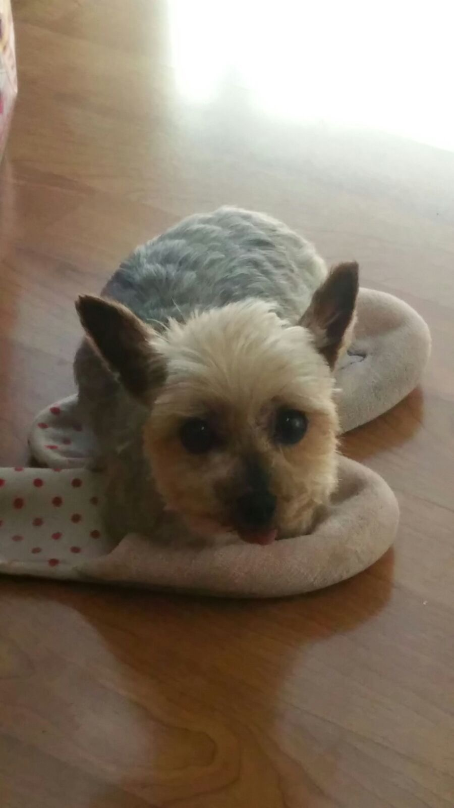
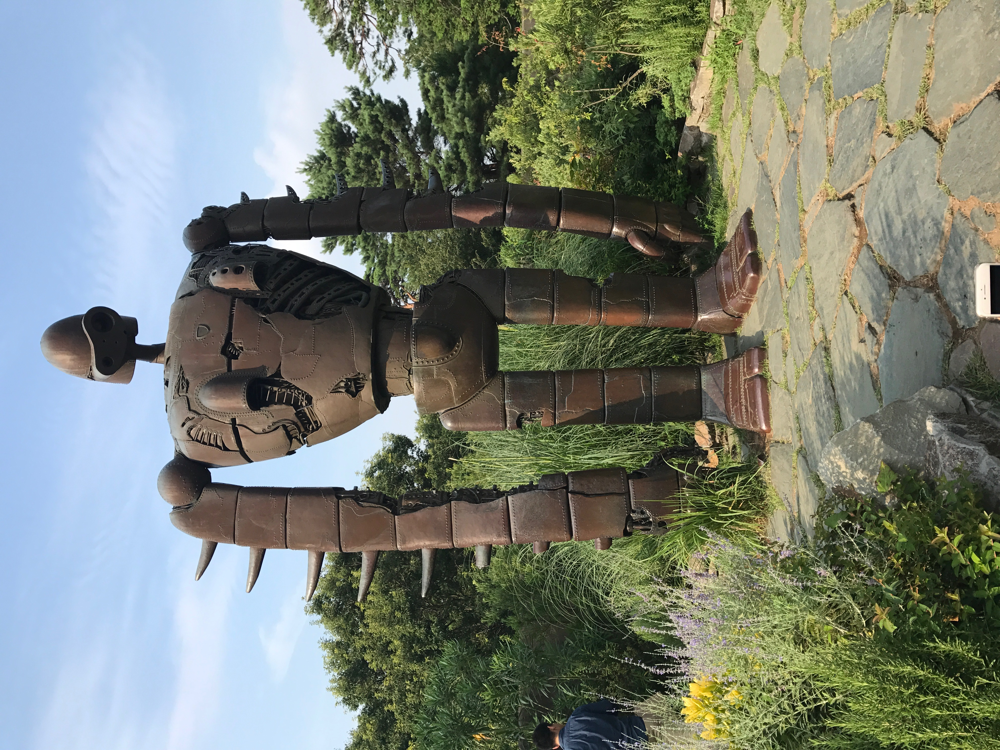
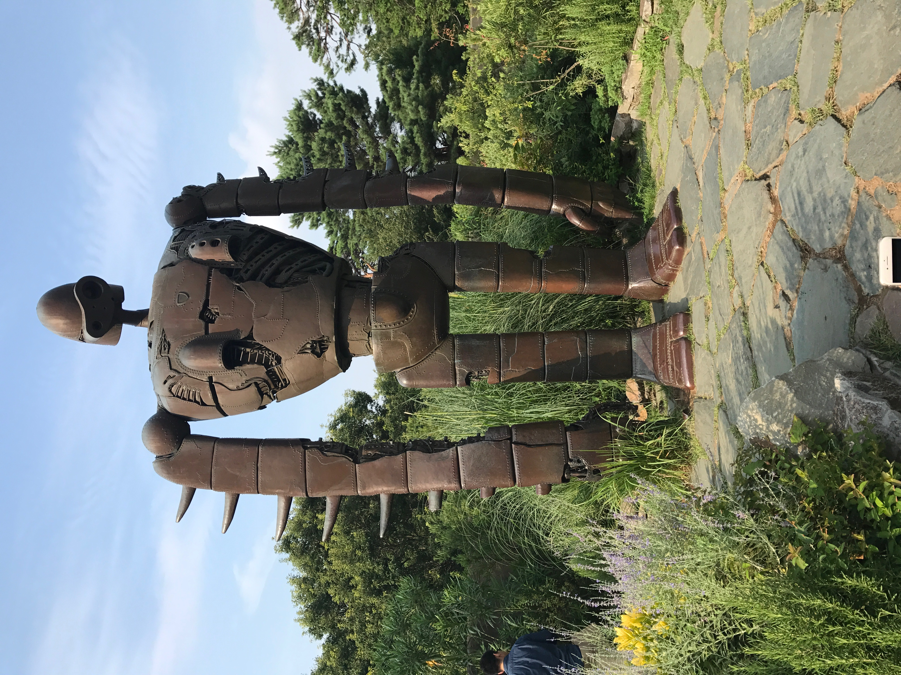

About Me

Hi, I'm Jasmine, and I am currently a sophomore at Dartmouth College. I am majoring in Computer Science modified with Digital Arts, with minors in Japanese and Human-Centered Design. I like to code in python and java, and I think app development, virtual reality, and web development are really cool.
I am from San Francisco, CA, and I have two pets: a cat and a dog.
 When I go back home during breaks, much of my time is spent playing with them.
I look forwared to using the skills that I have learned in my computer science classes and solve real-world problems at DALI. In addition, I hope to have the chance to work with designers and learn more about design, since it is such an integral part in bridging the gap between the user and the code. I am also excited to learn about new technology that I have not had the chance to work with so far and collaborate with some talented people!


 
